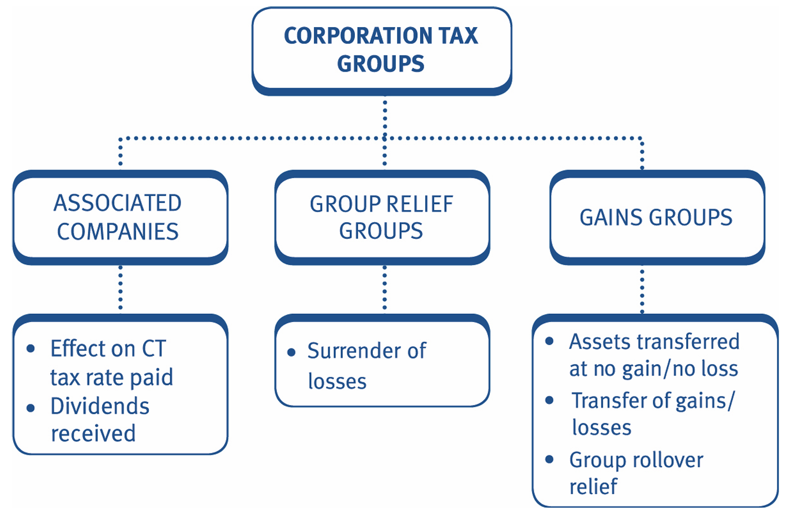
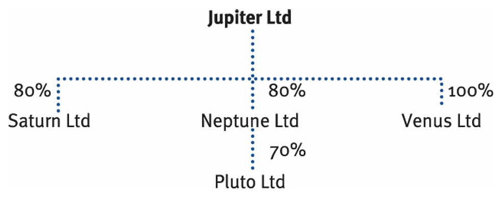
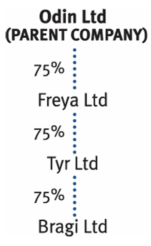

Chapter 15: Groups of companies
- compute the corporation tax liability and apply marginal relief.
- define a 75% group, and recognise the reliefs that are available to members of such a group .
- define a 75% chargeable gains group, and recognise the reliefs that are available to members of such a group.

Associated companies were defined in Chapter 13. In group questions in the TX examination it is often necessary to determine the number of associates, or to state which companies are associated and potentially why.
Group relief group
Group loss relief is available to members of a 75% group relief group. Losses of one member of the group can be surrendered to other group companies, to utilise against their own taxable total profits.
Introduction
Definition of a 75% group relief group
Two companies are members of a 75% group relief group where one company is the 75% subsidiary of the other, or both companies are 75% subsidiaries of a third company.
A company (the parent company) has a 75% subsidiary if it owns, directly or indirectly, at least 75% of its ordinary share capital, and it has the right to 75% or more of its distributable profits, and it has the right to 75% or more of its net assets on a winding up.
For sub-subsidiaries to be in a group, the parent company must have an effective interest in the sub-subsidiary of at least 75%.
Groups can be created through companies resident overseas. However, for the purposes of the TX examination, the companies actually claiming/surrendering group relief must be resident in the UK.
Companies can be in more than one loss relief group.
Implications of being in a group relief group
Where a group of companies form a group relief group:
- Losses of one group company may be surrendered to other companies in the group.
- The recipient company can then relieve the losses against its own taxable total profits.
A loss may be surrendered by any member company to any other member of the same group, provided they are UK resident.
Mechanics of group relief
Companies which form part of the same group relief group can transfer losses between each other.
The surrendering company is the company that surrenders its loss.
The claimant company is the company to which the loss is surrendered.
The losses which may be surrendered are:
- trading losses
- current period
- brought forward trading losses to the extent that they cannot be used against the surrendering company’s own total profits
- current period
- unrelieved QCDs
- unrelieved property business losses –
- current period and brought forward losses.
- trading losses
QCDs and property losses are only ‘unrelieved’ if they exceed any other income and gains before the deduction of any losses (current year, brought forward or carried back).
Unrelieved QCDs are treated as surrendered before unrelieved property business losses.
Capital losses cannot be surrendered to group companies under these rules (i.e. cannot be ‘group relieved’).
The percentage holding in a company is only relevant for determining whether companies are in a group relief group. It is not relevant in determining the amount of group relief available. Thus, a 75% subsidiary company can surrender 100% of its available losses to another member of the group.
The surrendering company
- The surrendering company may surrender any amount of its current period trading losses, unrelieved QCDs and unrelieved property business losses.
- Brought forward trading and property losses can be surrendered to the extent that the surrendering company is unable to use the loss.
- There is no requirement for the surrendering company to actually claim to relieve a trading loss against its own profits first.
Example 1: 75% group relief group
Mountain Ltd owns 100% of the share capital of a number of profitable UK resident companies. All companies prepare accounts to 31 March. Mountain Ltd’s results for the year ended 31 March 2026 are as follows:
| Trading loss | (130,000) |
| Non-trade loan relationship income | 2,300 |
| Property business loss | (15,000) |
| Qualifying charitable donations | (4,000) |
| Capital loss | (12,000) |
In addition, Mountain Ltd has unrelieved trading losses brought forward at 1 April 2025 of £50,000.
What is the maximum amount of loss that Mountain Ltd can surrender to its 100% subsidiaries, using group relief, for the year to 31 March 2026?
Solution
The maximum amount of loss that Mountain Ltd can surrender using group relief is calculated as follows:
| £ | £ | |
|---|---|---|
| Trading loss – current period | 130,000 | (130,000) |
| Excess property business loss and QCDs and trading loss b/f: | ||
| Trading loss b/f | (50,000) | |
| Property business loss | (15,000) | |
| Qualifying charitable donations | (4,000) | |
| Less: Non-trade loan relationship income | 2,300 | |
| Excess losses | (66,700) | |
| Maximum group relief | (196,700) |
Current year losses can be surrendered in full.
Only excess property business losses, QCDs and trading losses b/f can be surrendered. So these losses are reduced by the amount of other income, in this case NTLR income.
Capital losses cannot be surrendered under the group relief provisions.
The claimant company
- Offsets the group relieved losses against taxable total profits of its corresponding accounting period.
- The surrendering company may surrender any amount of its eligible losses. However, the maximum group loss relief that can be accepted by the claimant company is:
| £ | |
|---|---|
| Total profits | X |
| Less: Losses brought forward (full amount) | (X) |
| Less: Current year losses | (X) |
| Less: QCD relief | (X) |
| Maximum group loss relief that can be accepted | X |
Note that the maximum group loss relief that can be accepted by the claimant company is its taxable total profits, assuming that current year and brought forward losses have been offset to their fullest extent.
This applies even if the company does not actually make a claim to offset current year trading losses, or only claims a specific amount for brought forward trading losses or property business losses.
Group relief is deducted from TTP (i.e. after QCDs) in the claimant company’s corporation tax computation.
Claim for group relief
The claim for group relief:
- is made by the claimant company on its corporation tax return
- within two years of the end of its AP
- but requires a notice of consent from the surrendering company.
Example 2: Maximum amount of group relief available
Red Ltd has trading losses for the year to 31 December 2025, of £65,000. It has brought forward trading losses of £12,000. Red Ltd has no other income or gains in the current or prior year.
Red Ltd owns 85% of Pink Ltd. Pink Ltd has tax adjusted trading profits of £85,000, for the year to 31 December 2025. It has brought forward trading losses of £35,000 and brought forward capital losses of £5,000.
Show the maximum amount of group relief available in the year to 31 December 2025 and state the amount of any unrelieved losses.
Solution
Corresponding accounting periods
Losses surrendered by group relief, must be set against the claimant company’s profits of a ‘corresponding’ accounting period as follows:
- A corresponding accounting period is any accounting period falling wholly or partly within the surrendering company’s accounting period.
- Where the companies do not have coterminous (same) year ends, the available profits and losses must be time apportioned, to find the relevant amounts falling within the corresponding accounting period.
- In this situation, the maximum ‘loss’ that can be surrendered = lower of:
‘loss’ in the surrendering (loss-making) company for the corresponding accounting period, and
‘taxable total profits’ in the claimant company for the corresponding accounting period
Example 3: Non-coterminous y/e
Cup Ltd is a wholly owned subsidiary of Sugar Ltd.
Sugar Ltd incurs a trading loss of £27,000, in its nine-month accounting period to 31 March 2026.
The taxable total profits of Cup Ltd are £24,000 and £38,000 for the 12 month accounting periods to 30 September 2025 and 2026 respectively.
State the maximum amount of group relief which Cup Ltd can claim from Sugar Ltd, in each of the two accounting periods to 30 September 2026.
Solution :::{.callout-tip} As the companies have non-coterminous year ends, firstly identify the corresponding accounting periods:
- 9 m/e 31.3.2026 and y/e 30.9.2025 –> The corresponding accounting period is 1 July 2025 to 30 September 2025 (i.e. three months).
- 9 m/e 31.3.2026 and y/e 30.9.2026 –> The corresponding accounting period is 1 October 2025 to 31 March 2026 (i.e. six months).
:::
Cup Ltd can therefore claim the following group relief:
AP to 30.9.2025
| Sugar Ltd surrender | £ |
|---|---|
| 3/9 × £27,000 loss | 9,000 |
| Cup Ltd claim | |
| 3/12 × £24,000 | 6,000 |
| Therefore maximum loss claim is £6,000. |
AP to 30.9.2026
| Sugar Ltd surrender | £ |
|---|---|
| 6/9 × £27,000 loss | 18,000 |
| Cup Ltd claim | |
| 6/12 × £38,000 | 19,000 |
| Therefore maximum loss claim is £18,000. |
Note that after these current year group relief claims, Sugar Ltd would have £3,000 (£27,000 – £6,000 – £18,000) of loss carried forward as at 1 April 2026.
It may be possible to claim group relief for this loss carried forward against Cup Ltd’s taxable total profits for the period 1 April 2026 to 30 September 2026, if any loss remains after offsetting against Sugar Ltd’s profits for the following period.
Example 4: Non-coterminous y/e
White Ltd and Black Ltd are in a group relief group and had the following recent results:
| £ | |
|---|---|
| White Ltd – trading loss for the y/e 30 June 2026 | (24,000) |
| Black Ltd – taxable total profits: | |
| Y/e 30 September 2025 | 36,000 |
| Y/e 30 September 2026 | 20,000 |
Explain the amount of group relief Black Ltd can claim from White Ltd, for each of the two accounting periods ended September 2026.
Solution
Companies joining/leaving the 75% group
If a company joins or leaves a group, group relief is only available for the ‘corresponding accounting period’ (i.e. when both companies have been a member of the same group).
The profits and losses are therefore time apportioned to calculate the maximum group relief available.
However, an alternative method of allocating the loss can be used, with the agreement of HMRC, where it would be unjust or unreasonable to use time apportionment.
You should always use time apportionment in the examination.
Payment for group relief
If the claimant company pays the surrendering company for the group relief, the payment is ignored for corporation tax purposes:
- it is not tax allowable in the claimant company’s computation, and
- it is not taxable income in the surrendering company’s computation.
Tax loss planning
The following points should be considered, when deciding how to offset a trading loss which arises within a 75% group relief group company:
- Whether the loss should be surrendered.
- Order of surrender.
Choosing whether to surrender
A group member with a loss has the choice of:
- making a claim against its own profits, and/or
- surrendering some/all of the loss to another group member.
Remember that:
- Unlike utilising current year losses against a company’s own profits (which is ‘all or nothing’), group relief is very flexible.
- It is possible to specify the amount of loss to be surrendered within a group – which can be any amount up to the maximum amount.
- One of the key aims is to ensure losses are used within the group to save the most tax. Accordingly, losses are first set against profits taxed at the marginal rate.
- The surrendering company may surrender some of its losses using group relief and utilise the rest against its own profits.
- If it has paid QCDs, it should ensure that losses retained will reduce total profits before deduction of QCDs to the amount of any QCDs paid. This will allow the QCDs to be deducted in full without any corporation tax becoming due.
- If the surrendering company was profitable in the previous period, it may be beneficial to retain enough losses to make a carry back claim. The carry back claim will generate a refund of corporation tax already paid.
However, in order to make a prior year claim, an ‘all or nothing’ current year claim must first be made, which may waste QCDs in the current year.
As a current year claim against the company’s own profits is ‘all or nothing’ it is important that the optimum group relief surrender is made first, leaving the desired amount of loss available against the company’s own profits.
Example 5: 75% group relief group
Athena Ltd has two wholly owned subsidiaries, Hera Ltd and Demeter Ltd.
The group companies have the following results for the year ended 31 March 2026.
| Athena Ltd | Hera Ltd | Demeter Ltd | |
|---|---|---|---|
| Trading profit/loss | (100,000) | 20,000 | 200,000 |
| NTLR income | 30,000 | 2,000 | 5,000 |
| QCDs | 0 | (22,000) | (3,000) |
Athena Ltd is not expected to achieve trading profits until the year ended 31 March 2029 and does not expect significant gains or other income in the near future. Athena Ltd’s total taxable profits for the year ended 31 March 2025 were £15,000 after deduction of a QCD of £5,000.
Calculate the corporation tax payable by each of these companies for the year ended 31 March 2026:
- if no elections are made to utilise Athena Ltd’s loss
- if elections are made to utilise Athena Ltd’s loss in the most beneficial manner.
Solution
There are three associated companies in the group.
Therefore, the corporation tax rate limits are as follows:
Upper limit: £250,000 ÷ 3 = £83,333
Lower Limit: £50,000 ÷ 3 = £16,667
(a) If no elections made to utilise Athena Ltd’s loss
| Athena Ltd (£) | Hera Ltd (£) | Demeter Ltd (£) | |
|---|---|---|---|
| Trading profit | 0 | 20,000 | 200,000 |
| NTLR income | 30,000 | 2,000 | 5,000 |
| Total profits | 30,000 | 22,000 | 205,000 |
| Less: QCDs | 0 | (22,000) | (3,000) |
| TTP | 30,000 | 0 | 202,000 |
| CT liability (30,000; 202,000 × 25%) | 7,500 | 50,500 | |
| Less: Marginal relief | |||
| 3/200 × (83,333 – 30,000) | (800) | ||
| Corporation tax | 6,700 | 0 | 50,500 |
(b) If elections are made to utilise Athena Ltd’s loss in the most beneficial manner
In order to utilise its loss, Athena Ltd has the following options:
- A current year claim against total profits followed by a carry back claim in Athena Ltd
- Carry the loss forward against total profits
- Group relief (current year or carry forward) to Hera Ltd or Demeter Ltd.
In the current year (FY2025) Athena has £13,333 (£30,000 – £16,667) of profits taxed at the marginal rate of 26.5% with the remaining £16,667 taxed at 19%. Athena’s prior year profits of £15,000 would have been taxed at 19%.
All Demeter’s profits are being taxed at a rate of 25%.
The most beneficial use of the loss would be for Athena Ltd to make a current year claim against its own total profits of £13,333 (saving tax at 26.5%) and a group relief surrender to Demeter to utilise the remaining £86,667 of loss (saving tax at 25%).
However, as the claim against Athena’s own profits is an “all or nothing” claim, the group relief surrender of £86,667 should be made first (as a specific claim is allowed) leaving £13,333 for the “all or nothing” claim against Athena’s own current year profits.
Carrying the loss forward would be less beneficial than the other options as profits are not expected until the year ended 31 March 2029 and no significant gains or other income is anticipated. Although this would save corporation tax in the future, it is not beneficial for cash flow, and it is not certain that profits will arise in Athena Ltd as soon as expected.
| Year ended 31 March 2026: | Athena Ltd | Hera Ltd | Demeter Ltd |
|---|---|---|---|
| Trading profit/loss | 0 | 20,000 | 200,000 |
| NTLR income | 30,000 | 2,000 | 5,000 |
| Total profits | 30,000 | 22,000 | 205,000 |
| Less: Current year loss relief | (13,333) | ||
| Total profits after loss relief | 16,667 | 22,000 | 205,000 |
| Less: QCDs | 0 | (22,000) | (3,000) |
| TTP before group relief | 16,667 | 0 | 202,000 |
| Less: Group relief | 0 | 0 | (86,667) |
| TTP after group relief | 16,667 | 0 | 115,333 |
| CT liability (16,667; 115,333 × 19%; 25%) | 3,167 | 0 | 28,833 |
This gives rise to an overall tax saving of £25,200 (£6,700 + £50,500 – £3,167 – £28,8)
Example 6: 75% group relief group
Jupiter Ltd is the parent company of a group of four companies. The relationships between the companies in the group, are shown in the diagram below:

All of the companies are UK resident except Venus Ltd, which is resident overseas and its trading activities are all outside the UK.
All of the companies have an accounting year ended 31 March 2026 and their income/(losses) for this year, were as follows:
| Tax adjusted trading P/(L) | NTLR income | QCDs | |
|---|---|---|---|
| Jupiter Ltd | 100,000 | – | – |
| Saturn Ltd | 50,000 | 15,000 | (20,000) |
| Neptune Ltd | (50,000) | 12,000 | – |
| Pluto Ltd | (25,000) | – | – |
| Venus Ltd | 15,000 | – | (5,000) |
Neptune Ltd’s total profits for the year ended 31 March 2025 were £8,000. Neptune Ltd is not expected to return to profitability for at least five years and NTLR income is expected to remain at a low level.
On the assumption that the most beneficial use is made by the group of any trading losses, compute the corporation tax payable by each UK resident company in respect of the above results.
Solution
Capital gains group
Special capital gains advantages are available to members of a capital gains group. They enable:
- assets to be transferred tax efficiently around the group
- the efficient use of capital losses within the group
- the advantages of rollover relief to be maximised.
Definition of a 75% capital gains group
- A capital gains group comprises the parent company and its 75% subsidiaries and also, the 75% subsidiaries of the first subsidiaries and so on.
- The parent company must have an effective interest of over 50%, in ALL companies.
- A company which is a 75% subsidiary, cannot itself be a ‘parent company’ and form a separate gains group. Therefore each company can only be in one gains group.
- While applying the 75% test, the shares held by overseas companies can be taken into account. Non-UK resident companies, however, cannot take advantage of the special reliefs available to UK resident members.
- The 75% requirement only applies to the ownership of the ordinary share capital. It is important to note that the definition of a gains group is different from that for a group relief group. It is essential to learn the different definitions.
Example 1: Capital gains group
The Odin Ltd group consists of the following companies:

- State which companies form a capital gains group.
- State which companies form a group relief group.
Solution
Implications of being in a 75% capital gains group
The reliefs that are available to members of a 75% capital gains group are:
- Assets are transferred at no gain/no loss.
- Chargeable gains and allowable capital losses can be transferred around the group.
- Rollover relief is available on a group basis.
Transfer of assets within a group
The detailed rules on chargeable gains for companies are covered in Chapter 21. However, broadly a chargeable gain for a company is calculated as proceeds less original cost less indexation allowance (IA) to the date of disposal or December 2017 if earlier.
Indexation allowance is calculated by applying the relevant indexation factor to the original cost. You might like to revisit this section once you have studied Chapter 21.
Assets transferred within a gains group are automatically transferred at no gain/no loss (i.e. without a chargeable gain or allowable loss arising).
The transfer is deemed to take place at a price that does not give rise to a gain or a loss (i.e. original cost plus indexation allowance to the date of the transfer or December 2017 if earlier).
- The transferor’s deemed proceeds figure is also the deemed cost of the acquiring company.
- No claim is made – the treatment is automatic and mandatory.
- When the acquiring company sells the asset outside of the gains group, a chargeable gain/allowable loss arises on the disposal in the normal way.
Example 2: Inter group transfer then sale outside group Using indexation
Green Ltd acquired a building on 1 April 1996, for £100,000. The building was transferred to Jade Ltd, a wholly owned subsidiary, on 1 October 2006, for £120,000, when it was worth £180,000.
On 1 December 2025, Jade Ltd sold the building outside of the group for £350,000.
Calculate the chargeable gain, if any, arising on the transfer of the building in October 2006 and the sale of the building in December 2025.
Assume the indexation factors are as follows:
- April 1996 to October 2006: 0.313
- April 1996 to December 2017: 0.822
- October 2006 to December 2017: 0.388
Solution
Transfer of building – October 2006
The transfer from Green Ltd to Jade Ltd, takes place at such a price that gives Green Ltd, no gain and no loss as follows:
| £ | |
|---|---|
| Cost | 100,000 |
| Plus: IA (April 1996 to October 2006) | |
| 0.313 × £100,000 | 31,300 |
| Deemed proceeds | 131,300 |
Sale of building – December 2025
When Jade Ltd sells the building outside the group, its cost is deemed to be £131,300:
| £ | |
|---|---|
| Sale proceeds | 350,000 |
| Less: Deemed cost | (131,300) |
| Unindexed gain | 218,700 |
| Less: IA (Oct 2006 to Dec 2017) (IA frozen at Dec 2017) | |
| 0.388 × £131,300 | (50,944) |
| Chargeable gain | 167,756 |
The gain is chargeable on Jade Ltd, the company selling the building.
Example 3: Inter group transfer then sale outside group Using indexation
Orange Ltd acquired a factory on 1 June 1998, for £80,000. The factory was transferred to Amber Ltd, a wholly owned subsidiary, on 1 September 2010, for £115,000, when it was worth £160,000.
On 21 November 2025, Amber Ltd sold the factory outside the group for £385,000.
Calculate the chargeable gain, if any, arising in September 2010 and November 2025.
| Period | Indexation factor |
|---|---|
| June 1998 to September 2010 | 0.379 |
| September 2010 to December 2017 | 0.234 |
| June 1998 to December 2017 | 0.702 |
Solution
Transfer of factory – September 2010
The transfer from Orange Ltd to Amber Ltd, takes place at such a price as gives Orange Ltd no gain and no loss as follows:
| Cost | £ |
|---|---|
| Plus: IA (June 1998 to September 2010) | |
| 0.379 × £80,000 | 30,320 |
| Deemed proceeds | 110,320 |
Sale of factory – November 2025
When Amber Ltd sells the factory outside the group, its cost is deemed to be £110,320:
| Sale proceeds | £ |
|---|---|
| Less: Deemed cost | (110,320) |
| Unindexed gain | 274,680 |
| Less: IA (Sept 2010 to Dec 2017) (Note) | |
| 0.234 × £110,320 | (25,815) |
| Chargeable gain | 248,865 |
The gain is chargeable in Amber Ltd, the company selling the factory.
Note: Indexation allowance is frozen at December 2017.
Transfer of chargeable gains and allowable losses
As shown in the two previous illustrations, assets can be transferred around a capital gains group with no tax implications (i.e. assets are transferred at no gain/no loss).
A company will typically transfer an asset in this way if the other group company wants to use the asset in its business.
Transferring an asset to another group company with a capital loss, immediately before the asset is sold outside of the group at a gain, would also enable the offset of group capital losses and gains to be maximised.
However, it is also possible to elect to transfer current period chargeable gains/allowable losses within a group without physically transferring the asset.
Election to transfer chargeable gains and allowable losses
Members of capital gains groups can make a joint election to transfer chargeable gains or allowable losses to any other company in the group.
As a result, a group can plan to maximise the use of its capital losses as early as possible by matching chargeable gains with capital losses without having to make an actual transfer of an asset.
The joint election:
- is available provided both companies are members of the gains group at the time the gain or loss arose.
- must be made within two years of the end of the accounting period, in which the gain or loss arose.
- must specify which company in the group the gain or loss is to be attributed to, for tax purposes.
Remember, that only current year chargeable gains or allowable losses can be transferred, not brought forward losses.
Benefits of the joint transfer election
- As no actual transfer of assets is taking place within the gains group, there will be savings in legal and administrative costs.
- The two year time limit for making the election, means that tax planning can be undertaken retrospectively.
- An election can specify the amount of gain or loss to be transferred (i.e. it does not need to be the whole chargeable gain/allowable loss arising on a disposal). This gives increased flexibility with tax planning.
Example 4: 75% capital gains group
Red Ltd has brought forward capital losses of £60,000. Its 100% subsidiary Blue Ltd, disposed of an asset on 15 June 2025 that resulted in a chargeable gain of £55,000. Both companies prepare accounts to 31 March.
Explain how Red Ltd and Blue Ltd can make an election to minimise the tax payable for the year ended 31 March 2026.
Solution
The two companies can make a joint election to transfer Blue Ltd’s gain to Red Ltd.
The election must be made by 31 March 2028 (i.e. two years after the year ended 31 March 2026). There is no need for the asset to actually be transferred from Blue Ltd to Red Ltd before the disposal.
Red Ltd can then set off its capital losses brought forward against the chargeable gain arising on the disposal outside of the group.
Note that Red Ltd cannot transfer its capital losses to Blue Ltd as capital losses brought forward cannot be transferred around the group.
Example 5: 75% capital gains group
In the accounting period to 31 March 2026, Alpha Ltd disposed of a chargeable asset which resulted in a chargeable gain of £90,000.
Alpha Ltd has an 80% subsidiary, Beta Ltd.
In the accounting period to 31 March 2026, Beta Ltd disposed of a chargeable asset, which resulted in a capital loss of £65,000.
Alpha Ltd and Beta Ltd are both UK resident companies.
Show how the tax liabilities of the Alpha Ltd group may be minimised.
Explain whether your advice would change if Beta Ltd also had £20,000 capital losses brought forward.
Solution
Group rollover relief
Rollover relief (ROR) is covered in detail in Chapters 20 and 21.
- Companies within a 75% gains group, are treated as if they form a single trade, for the purposes of ROR.
- ROR can therefore be claimed, where:
- one company within a gains group, disposes of an eligible asset and makes a chargeable gain, and
- another company within the same gains group, acquires an eligible replacement asset.
Example 6: 75% capital gains group - Group rollover relief
Cheese Ltd sold a factory for £600,000, in the year ended 31 December 2025. The original cost of the factory was £200,000 and the relevant indexation allowance was £65,000. Cheese Ltd owns 75% of Ham Ltd. Ham Ltd bought a warehouse costing £750,000, in the year ended 31 December 2026.
- Calculate the chargeable gain arising on the sale of the factory assuming all available reliefs are taken.
- Calculate the base cost of the warehouse.
Solution
(a) Gain on sale of factory for Cheese Ltd
| Proceeds | £ |
|---|---|
| Proceeds | 600,000 |
| Less: Cost | (200,000) |
| Unindexed gain | 400,000 |
| Less: IA | (65,000) |
| Indexed gain | 335,000 |
| Less: ROR | (335,000) |
| Chargeable gain | 0 |
Note: Full ROR is available, as all proceeds were reinvested by a member of the gains group, within the required time limit.
- Base cost of the warehouse for Ham Ltd
| £ | |
|---|---|
| Original cost | 750,000 |
| Less: ROR | (335,000) |
| Base cost | 415,000 |